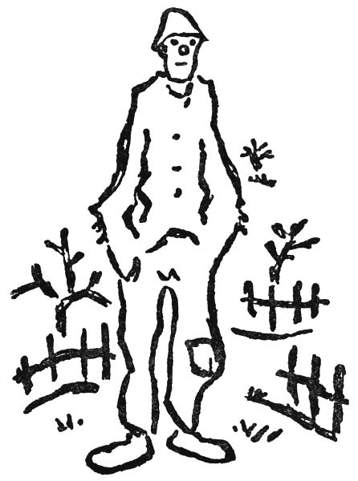
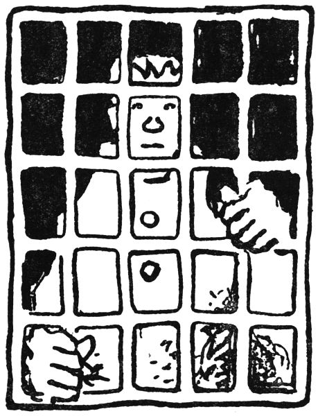
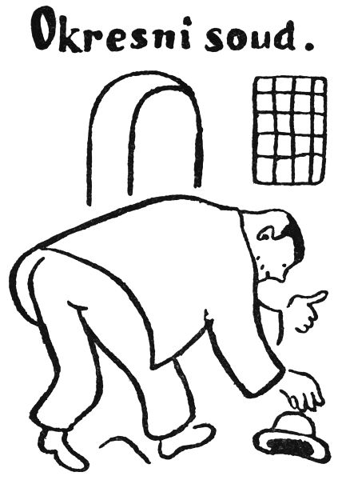
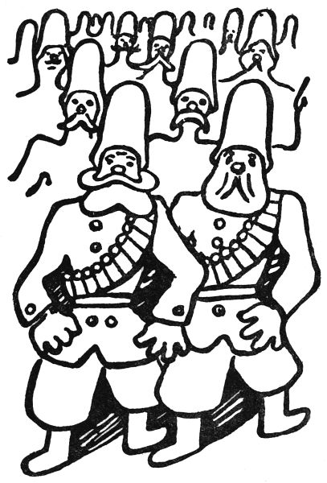
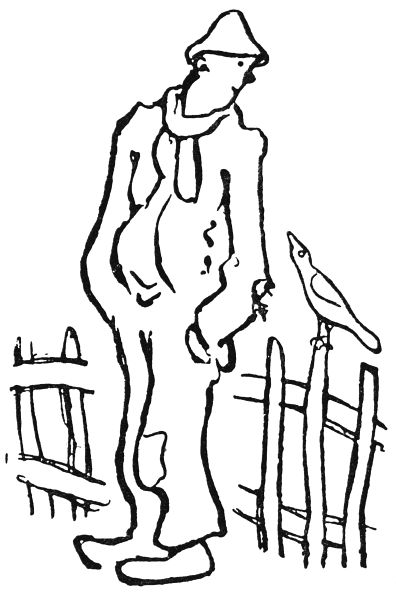
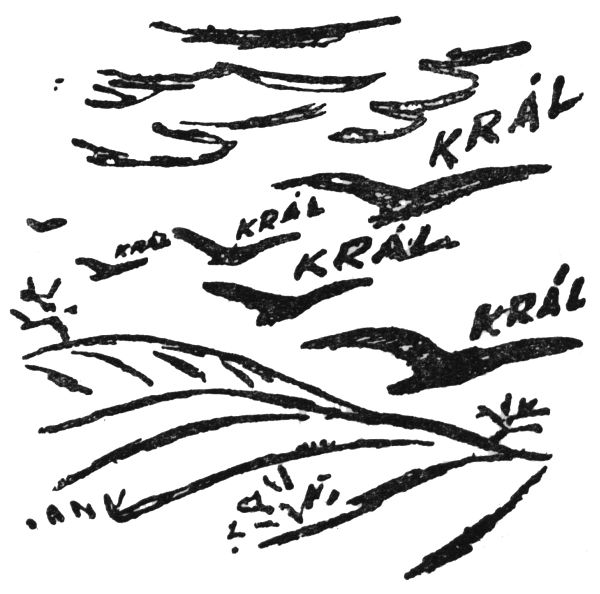

Pohádka tulácká
Král František
Jmenoval se vlastně František Král, ale tak mu říkali jenom tehdy, když ho sebral strážník a dovedl ho na komisařství pro potulku, kde ho zapsali do takové tlusté knihy a nechali ho přespat na pryčně a ráno ho zase poslali dál; na policii mu tedy říkali František Král, ale ostatní lidé ho jmenovali všelijak jinak: ten vandrák; ten šupák, ten tulák, ten pobuda, ten lajdák, ten otrapa, ten hadrník, ten trhan, ten obejda, ten lenoch, ten cikán, ten chudák, ten jindyvyjduum, ten člověk, ten kdovíkdo, ten dareba, ten poběhlík, ten krajánek, ten štvanec, ten vošlapa, ten revertent, ten ludrák, ten prašivka, ten hunt, ten syčák, ten holota, a ještě mnoho jiných jmen mu dávali; kdyby každé to názvisko platilo aspoň korunu, mohl by si za ně koupit žluté boty a možná že i klobouk, ale takhle si za to nekoupil nic a měl jenom to, co mu lidé dali.
Jak tedy je už zřejmo, řečený František Král se netěšil nejlepší pověsti a opravdu nebyl nic jiného nežli tulák, který jen ukrádal Pánubohu čas (jenže Pánbůh na věčnosti má tolik mnoho času, že mu ho tím ani za mák neubylo) a neuměl nic než pískat kudlu. Víte, co je to pískat kudlu? To se dělá tak, že člověk ráno suší hubu, v poledne nemá do čeho kousnout a večer se místo jídla párá dřívkem v zubech; a když mu pak kručí hladem žaludek, tomu se říká, že píská kudlu. František Král uměl pískat kudlu tak, že by na ni mohl dávat koncerty; jinak to byl dobrák od kosti – kde by se na něm, chudákovi, také nabralo masa! Když dostal kus chleba, snědl jej, a když mu dali zlé slovo, tak je taky spolkl; takový měl hlad. A když nedostal nic, lehl si někde za plotem, přikryl se tmou a poprosil hvězdičky, aby daly pozor, aby mu nikdo neukradl čepici.
Takový vandrovní člověk ví o světě ledacos; ví, kde dostane najíst, ví, kde dostane vynadáno nebo kde jsou zlí psi, kteří mají na tuláky spadeno víc než četníci. Ale já vám povídám, že byl jednou jeden pes, jakpak se honem jmenoval, aha, Foxl, však už je chudák taky v Pánu. Tak ten Foxl sloužil na zámku v Chyži a měl takovou divnou náturu, že když uviděl vandráka, pištěl radostí, tancoval kolem něho a vedl ho rovnou do zámecké kuchyně; ale když přišel na zámek nějaký velký pán, řekněme baron, hrabě, kníže, nebo dokonce pražský arcibiskup, řval na něj Foxl jako pořčený a byl by ho roztrhal, kdyby ho kočí honem nezavřel do konírny. Jak vidíte, jsou i mezi psy všelijaké rozdíly; jakpak teprve mezi lidmi.
Ale když už jsme u těch psů, víte, děti, proč pes vrtí ocasem? To je tak. Když Pánbůh stvořil svět se vším všudy, šel od jednoho božího tvora k druhému a pěkně přívětivě se ho vyptával, je-li na světě spokojen a zda mu nic neschází a podobně. Pak taky přišel k prvnímu psovi na světě a ptal se ho, zda mu nic medle neschází. Pes chtěl honem zavrtět hlavou, že jako zaplaťpámbu ne, ale protože zrovna čuchal k něčemu náramně zajímavému (byla to myslím první kost nebo první kůžička z buřtu, ještě teplá, jak právě vyšla z ruky Stvořitele), spletl se pes a horlivě zavrtěl ocasem. Od té doby pes vrtí ocasem, kdežto jiná zvířata, jako kůň a kráva, dovedou potřásat hlavou tak jako člověk. Jen prase neumí kývat ani vrtět hlavou, a to proto, že když se ho Hospodin tázal, jak je na tom božím světě spokojeno, rylo dál rypákem po žaludech a jen tak potřáslo netrpělivě ocáskem, jako by chtělo říci: Pardon, na moment, teď zrovna nemám pokdy. Od té doby prase pořád tak potřásá a potrhává ocáskem, pokud je živo, a jeho ocásek se za trest jídá podnes s křenem nebo hořčicí, aby jej to i po smrti štípalo. Tak je to od stvoření světa.
Ale o tom jsem nechtěl dnes povídat, nýbrž o tulákovi, který se jmenoval František Král. Tak ten tulák chodil po celém světě; byl až v Trutnově, kde jsou už Němci, a v Hradci Králové, a ve Skalici, a dokonce až ve Vodolově a Maršově a jiných dalekých městech celého světa. Jeden čas sloužil také u mého dědečka na Žernově, ale to víte, tulák je tulák; sebral svůj raneček a šel zase dál, do Starkoče nebo na který kraj světa, a zas po něm nebylo vidu ani slechu; taková to byla neposedná krev.

Už jsem vám říkal, že lidé ho jmenovali tulák, trhan, pobuda a ještě všelijak jinak; ale někdy mu také říkali, že je poberta, zloděj, rošťák, dareba nebo raubíř, ale to mu moc křivdili. František Král nikdy nikomu nic nevzal, neukradl ani neštípl. Na mou víru, ani co by za nehet vlezlo. Právě proto, že byl tak poctivý, se nakonec dočkal veliké slávy; ale o tom vám právě chci vypravovat.
Tak jednou stál ten tulák František na Podměstečku a přemýšlel, má-li si jít k Vlčkům pro housku nebo k starému panu Prouzovi pro rohlík. A tu jde podle něho vznešený pán, snad to byl nějaký cizí továrník nebo obchodní cestující, a nese v ruce kožený kufřík. Najednou zafoukl vítr, shodil tomu pánovi klobouk a už jej kutálel po silnici. „Člověče, podržte mi to na chvilku,“ křikl honem ten pán a hodil tulákovi Františkovi ten kožený kufřík; a než řekl švec, už byl v prachu za kloboukem až někde u Sychrova.
Stojí tedy František Král s tím kufříkem v ruce a čeká, až se ten pán vrátí. Čeká půl hodiny, čeká hodinu, ale pán nikde. František si netroufá zaskočit ani pro tu housku, aby ho snad ten pán neminul, až se vrátí pro kufřík. Čeká dvě hodiny, tři hodiny, a aby neměl dlouhou chvíli, píská zatím kudlu. Pán se nevrací, a už se dělá noc. Na nebi se třpytí hvězdičky, celé městečko spí stočeno jako kočka za kamny a div nepřede, jak mu je dobře v peřinách. Ale tulák František ještě pořád stojí, trne, dívá se na hvězdičky a čeká, až se ten pán vrátí.
Zrovna tloukla půlnoc, když se za ním ozval strašný hlas: „Co tu děláte?“
„Čekám tu na jednoho cizího pána,“ řekl František.
„A co to máte v ruce?“ tázal se strašný hlas.
„To je kufřík toho pána,“ vykládal tulák. „Já mu jej mám podržet, co se vrátí.“
„A kde je ten pán?“ ptal se do třetice strašný hlas.
„On jenom odběhl, aby chyt svůj klobouk,“ pravil František.
„Hoho,“ řekl děsný hlas. „To je podezřelé. Pojďte se mnou.“
„To nejde,“ bránil se tulák. „Já tady musím čekat.“
„Ve jménu zákona vás zatýkám,“ zahřímal veliký hlas, a tu František Král pochopil, že to je pan Boura, strážník, a že tedy musí poslechnout. Podrbal se tedy, vzdychl a šel s panem Bourou na komisařství. Tam ho zapsali do tlusté knihy a zavřeli ho do šatlavy; ale ten kufřík zatím zamkli, až přijde ráno pan soudce.
Ráno přivedli tuláka před pana soudce; a vždyť to byl, namoutě, pan rada Šulc – dnes už ho také hlava nebolí.
„Ty budižkničemu, ty lajdáku, ty hadrlumpe,“ řekl pan soudce, „už jsi tady zas? Vždyť je tomu sotva měsíc, co jsme tě zavřeli pro potulku. Ježíši, človíčku, s tebou mám kříž! Tak co, zas tě sebrali, že ses toulal?“
„Ba ne, milostpane,“ povídá tulák František, „tady pan Boura mne sebral, protože jsem stál.“

„Tak vidíš, ty holoto,“ povídá pan soudce, „proč jsi stál? Kdybys nebyl stál, nebyli by tě sebrali. Ale slyším, že u tebe našli nějaký kufřík. Je to pravda?“
„Prosím, milostpane,“ povídá tulák, „ten kufřík mi dal nějaký cizí pán.“
„Hoho,“ zvolal pan soudce. „Toho cizího pána už známe. Když někdo něco ukradne, tak řekne, že to dostal od nějakého cizího pána. Holenku, tím nás nenapálíš. A co je v tom kufříku?“
„To nevím, namouduši,“ řekl tulák František.
„Ty taškáři jeden,“ povídá pan soudce, „však my se na to podíváme sami.“
I otevřel pan rada kufřík a vyskočil překvapením. Byly tam samé peníze, a když je přepočítal, bylo jich jeden milión tři sta šedesát sedm tisíc osm set patnáct korun devadesát dva halíře, krom toho kartáček na zuby.
„Hrom do toho,“ vykřikl pan soudce, „člověče, kdes to ukradl?“
„Prosím, milostpane,“ bránil se František Král, „to mi dal podržet ten cizí pán, co honil ten klobouk, co mu jej vzal vítr.“
„I ty zloději zlodějská,“ volal pan soudce, „copak si myslíš, že ti tohle uvěřím? To bych rád viděl, kdo by svěřil takovému trhanovi, jako jsi ty, jeden milión tři sta šedesát sedm tisíc osm set patnáct korun devadesát dva halíře a k tomu ještě kartáček na zuby! Marš do šatlavy! Však my už vyšetříme, komu jsi ten kufřík ukradl.“
A tak se stalo, že zavřeli chudáka Františka do šatlavy na hrozně dlouhou dobu. Utekla zima a minulo jaro, a ještě pořád nenašli nikoho, kdo by se hlásil o ty peníze; a tak si pan rada Šulc, pan strážník Boura a ostatní páni od soudu i od policie už mysleli, že František Král, tulák bez přístřeší a bez stálého zaměstnání, vícekráte trestaný a vůbec prašivka daremná, někde zabil a zakopal neznámého pána a vzal mu ten kufřík s penězi. A tak když uplynul rok a den, stál František Král před soudem pro vraždu neznámého pána a pro uloupení jednoho miliónu tří set šedesáti sedmi tisíc osmi set patnácti korun devadesáti dvou halířů a kartáčku na zuby. Šmankote, děti, za takovou věc je provaz.
„Ty huncúte, ty raubíři, ty prachmilióne,“ povídá pan soudce obžalovanému, „tak už se u všech všudy přiznej, kdes toho pána zabil a zakopal; bude se ti líp viset, když se přiznáš.“
„Dyť já ho nezabil, milostpane,“ bránil se chudák František; „on jenom honil ten klobouk, a frnk, už byl v prachu; letěl jako švec na jarmark a ten kufřík mně jako nechal v rukou.“
„Inu,“ vzdychl pan soudce, „když teda mermomocí chceš, pověsíme tě i bez přiznání. Pane Boura, tak toho zatvrzelého zločince s pomocí boží pověste.“
Jen to dořekl, když se rozletěly dveře a v nich stál nějaký cizí pán, celý zaprášený a udýchaný. „Už se našel,“ vyhrkl.
„Kdo se našel?“ ptal se pan soudce přísným hlasem.
„Ten klobouk,“ řekl cizinec. „Lidi, to vám byla mela. Tak já jdu po Podměstečku, a najednou mně vítr sebere klobouk. Já hodím svůj kufřík ani nevím komu a šup, letím za kloboukem. Ale klobouk, neřád, se kutálí přes most k Sychrovu a za Sychrovem k Zálesí a ke Rtyni a přes Kostelec ke Zbečníku a přes celý Hronov k Náchodu a tam tudyma kolem na pruskou hranici. Já pořád za ním; už jej skoro držím, ale na hranici mne chytne financ, a co prý tak utíkám. Jářku, že za kloboukem. Než jsem mu to vysvětlil, byl zase klobouk v prachu. Tak jsem se vyspal a pustil jsem se vám ráno za kloboukem do Pruska, na Levín a Chudobu, co je ta smradlavá voda –“
„Počkejte,“ pravil pan soudce. „Tady je soud, a ne nějaká zeměpisná přednáška.“
„Tak já to povím docela krátce,“ řekl cizinec. „V Chudobě se dovím, že můj klobouk tam vypil sklenici vody, koupil si hůl a pak sedl do vlaku a jel do Svídnice. To se rozumí, já jedu za ním. Ve Svídnici klobouk, neřád, přenocoval v jednom hotelu, ani nezaplatil účet, a pak odejel neznámo kam. Po delším pátrání jsem se dozvěděl, že chodí po Krakově, a dokonce že se tam chce oženit s jednou vdovou. Tak já jedu do Krakova za ním.“

„A proč jste jej tak honil?“ ptal se pan soudce.
„No,“ povídal cizinec, „on to byl ještě zánovní klobouk, a pak, já jsem zastrčil pod jeho pentli svůj zpáteční lístek na dráhu ze Svatoňovic do Starkoče. O ten zpáteční lístek mně šlo, pane rado.“
„Aha,“ řekl pan soudce, „to je docela správné.“
„To si myslím,“ pravil cizinec. „Nebudu si přece kupovat lístek dvakrát. Kde jsem přestal? Aha, že jedu do Krakova. Dobrá, tedy tam přijedu, a zatím klobouk, lump jeden, ujel první třídou do Varšavy vydávaje se za diplomata.“
„To je přece podvod,“ zvolal pan soudce.
„Však jsem to taky udal,“ povídal cizinec, „a policie telegrafovala z Krakova do Varšavy, aby byl zatčen. Ale zatím si můj klobouk pořídil kožich, protože už začínala zima, nechal si narůst vousy a jel do Moskvy.“
„A co dělal v Moskvě?“ tázal se pan soudce.
„No, co by tam dělal,“ pravil cizinec. „Politiku dělal, mizera. Stal se tam novinářem. Pak si vzal do hlavy, že se zmocní vlády, ale to už jej Rusové zatkli a odsoudili jej k smrti zastřelením; ale když jej vedli na popraviště, zafoukal vítr, a tu on, uličník, se začal kutálet a proklouzl mezi nohama vojáků a kutálel se po matičce Rusi až do Novočerkasku. Tam si dal na hlavu beranici a stal se atamanem donských kozáků. Já jej pronásleduju a konečně jej chytím; a tu on, padouch, zapíská na své kozáky a káže jim, aby mne zastřelili.“
„A co dál,“ ptal se pan soudce dychtivě.
„No, co by bylo dál,“ řekl cizinec. „Já jim povídám, že my se kozáků nebojíme, že je krájíme do polívky. Já nevím, pane rado, jestli tady u vás taky rostou kozáčky –“
„Rostou a hodně,“ pravil pan rada. „Nejvíc tamhle u Libňatova, nejvíc takhle, kde jsou břízy a osiky.“
„Kozák je docela dobrá houba,“ řekl cizinec, „jenomže má nožičku trochu dřevnatou. Tak já povídám, že u nás kozáky vaříme v polívce nebo rozkrájíme na malé kousky a sušíme, a toho se ti kozáci tak lekli, že mne pustili. Ale zatím můj klobouk, ničema, skočil na koně a uháněl na východ. Já, to se rozumí, za ním. A on v Orenburku sedne na vlak a jede na Omsk a přes celou Sibiř, ale v Irkutsku se mně ztratil; prý tam někde přišel k penězům, ale pak jej chytli lupiči Chunchuzové a obrali jej o všechno, takže vyvázl jen s holým životem. Pak jsem jej potkal na ulici v Blagověščensku, ale on mi, chytrák, pláchl a kutálel se přes celou Mandžurii až k Čínskému moři. Na břehu moře jsem jej dostihl, protože se bál vody.“
„Teda tam jste jej chytil?“ ptal se pan soudce.

„Kdepak,“ řekl cizinec. „Běžím k němu na břehu moře, ale v tu chvíli se obrátil vítr a klobouk se kutálel zas k západu. Já za ním, a tak jsem jej honil přes Čínu a Turkestán, dílem pěšky, dílem na nosítkách, na koních nebo na velbloudech, až zase v Taškentě sedl na dráhu a jel zpátky do Orenburku. Odtamtud jel na Charkov a Oděsu a odtamtud do Uher, pak se stočil na Olomouc a Českou Třebovou a na Týniště, a konečně zase sem k nám. A tady jsem jej před pěti minutami chytil na náměstí, právě když chtěl jít do hospody na papričku. Tak, tady je.“
Přitom ukázal ten klobouk; byl rozbitý nadranc, ale jinak by nikdo neřekl, že by to byl takový vykutálený taškář.
„A teď se podíváme,“ zvolal cizinec, „má-li ještě za pentlí ten zpáteční lístek ze Svatoňovic do Starkoče.“ I sáhl za pentli a vyňal lístek. „Je tady,“ vykřikl vítězně. „Tak, teď aspoň pojedu zadarmo do Starkoče.“
„Ale človíčku,“ řekl pan rada, „vždyť vám ten lístek už propadl!“
„Jak to?“ divil se cizinec.
„Inu, zpáteční lístek platí jen po tři dny a tenhle je, jak vidím, starý už rok a den. Panečku, ten už neplatí.“
„A hrom do toho,“ řekl cizinec, „to mně nenapadlo. Teď si musím koupit nový lístek a nemám už ani findy.“ Cizinec se poškrábal na hlavě. „Ale počkejte, já jsem dal podržet svůj kufřík s penězi nějakému mužskému, když jsem se pustil za tím kloboukem.“
„Kolik tam bylo peněz?“ ptal se honem pan soudce.
„Jestli se nemejlím,“ pravil cizinec, „tak tam byl jeden milión tři sta šedesát sedm tisíc osm set patnáct korun devadesát dva halíře a kartáček na zuby.“
„Navlas tolik,“ řekl pan soudce. „Tak ten kufřík máme tady se všemi penězi i s kartáčkem na zuby. A tady stojí ten mužský, co jste mu dal podržet svůj kufřík. Jmenuje se Král František, a právě jsme ho já a tuhle pan Boura odsoudili na smrt, že vás oloupil a zavraždil.“
„I koukejme,“ nato cizinec, „tak vy jste ho chudáka zavřeli? No, aspoň neutratil všechny prachy, co byly v tom kufříku.“
Tu povstal pan soudce a řekl slavnostně: „Teď teprve vidím, že Král František neukradl, neuzmul, neodcizil, neštípl a rovněž si nepřisvojil z peněz u něho uložených ani brka, šupu, vindry anebo findy, nykláku ani fluňky, ačkoli, jak potom zjištěno, neměl sám ani na munzemli nebo na dalamánka nebo též na housku, žemli či jinou poživatinu aneb pochutinu, zvanou též pekařský výrobek a latinsky cerealia. Prohlašuji tímto, že Král František je nevinen vraždou, mordem, latinsky homicidiem, zabitím, zakopáním mrtvého, loupeží, násilím, krádeží a vůbec zlodějčinou; nýbrž naopak že čekal den a noc na tom fleku, aby poctivě a neztenčeně vrátil jeden milión tři sta šedesát sedm tisíc osm set patnáct korun devadesát dva halíře a kartáček na zuby. Pročež prohlašuji, že je zproštěn žaloby, amen. Safra, kluci, to jsem toho napovídal, co?“
„No ba,“ pravil cizinec; „však už byste mohl pustit k slovu tady toho poctivého šupáka čili obejdu.“
„Co bych povídal,“ řekl František Král skromně. „Co jsem živ, nevzal jsem nikde nikomu ani padavče. To už je taková nátura.“
„Člověče,“ prohlásil cizinec, „to jste mezi vandráky a lidmi bílá vrána.“
„Namouduši,“ pravil pan rada, „učiněná bílá vrána.“
„Taky to říkám,“ dodal pan strážník Boura, který, jak jste si povšimli, si do této chvíle ještě neklápl.
Tak tedy přišel František Král zase na svobodu; ale odměnou za jeho poctivost mu dal ten cizinec tolik peněz, že by si za to mohl František koupit jeden dům, do toho domu jeden stůl, na ten stůl jeden talíř a na ten talíř jednu horkou jitrnici. Ale protože měl František Král děravou kapsu, ztratil ty peníze a neměl zase nic. Tak tedy šel, kam ho nohy nesly, a cestou pískal kudlu. Ale ta bílá vrána mu nešla z hlavy.
Na noc si vlezl do hlídačské boudy a spal jako dudek; a když ráno vystrčil hlavu, svítilo slunce, celý svět se třpytil čerstvou rosičkou a na plotě před boudou seděla bílá vrána. František nikdy dosud neviděl bílou vránu, a tak na ni koukal vyjeven, ani nedýchal. Byla bílá jako padlý sníh, oči měla červené jako rubín a nožičky růžové a česala si zobákem křídla. Když zahlédla Františka, potrhla křídly, jako by chtěla uletět, ale zůstala sedět a dívala se nedůvěřivě jedním rubínovým okem na ježatou hlavu Františkovu.

„Ty,“ ozvala se najednou, „nepraštíš mne kamenem?“
„Nepraštím,“ řekl František, a teprve teď se podivil, že vrána mluví. „Jak to přijde, že umíš mluvit?“
„To toho je,“ řekla vrána. „My bílé vrány umíme všechny mluvit. Černé vrány jen krákorají, ale já umím říci, nač si vzpomeneš.“
„Jdi pryč,“ podivil se tulák František. „Tak řekni třeba krám.“
„Krám,“ řekla vrána.
„Řekni tedy křáp,“ žádal František.
„Křáp,“ opakovala vrána. „Tak vidíš, že umím mluvit. My bílé vrány nejsme jen tak ledaskdo. Obyčejná vrána umí počítat jen do pěti, ale bílá vrána umí počítat do sedmi. Podívej se: jedna, dvě, tři, čtyři, pět, šest, sedm. A do kolika umíš ty počítat?“
„No, aspoň do desíti,“ řekl František.
„Ale jdi! Ukaž?“
„No tak třeba: devatero řemesel, desátá nouze.“
„Helejme,“ zvolala bílá vrána, „ty jsi moc chytrý pták. My bílé vrány jsme totiž nejlepší ptáci. Viděls, že lidé mají v kostelích malovány veliké ptáky s bílými husími křídly a lidskými zobáky?“
„Aha,“ řekl František, „ty myslíš anděly.“
„Ano,“ pravila vrána. „Víš, to jsou vlastně bílé vrány; jenže málokdo kdy viděl bílou vránu. Nás je, panečku, moc málo.“
„Abych ti řekl pravdu,“ řekl František, „já jsem taky bílá vrána.“
„No,“ pravila bílá vrána pochybovačně, „moc bílý nejsi. A kdo ti řekl, že jsi bílá vrána?“
„Včera mně to řekl pan rada Šulc od soudu, a jeden cizí pán, a pan strážník Boura.“
„Koukejme,“ divila se bílá vrána. „Co ty jsi vlastně zač?“
„Já jsem jenom Král František,“ řekl tulák ostýchavě.
„Král? Ty jsi král?“ vykřikla vrána. „Ty hrdloužeš, viď? Žádný král není přece tak otrhaný.“
„No víš,“ řekl tulák, „já jsem právě otrhaný Král.“
„A v které zemi jsi králem?“ ptala se vrána.
„Inu, všude. Já jsem Král tady, a když jsem ve Skalici, tak jsem taky Král, a v Trutnově taky –“
„A v Anglicku?“
„V Anglicku bych byl taky Král.“
„Ale ve Francii ne.“
„Ve Francii taky. Všude jsem Král František.“
„To není možné,“ pravila vrána. „Řekni namouduši.“
„Namouduši,“ zaklínal se František.
„Řekni pámbuví,“ žádala bílá vrána.
„Pámbuví,“ řekl František. „Ať se na místě propadnu, není-li to pravda. Ať mně jazyk upadne.“
„To stačí,“ skočila mu do řeči vrána. „A mezi bílými vránami by sis taky troufal být králem?“

„I mezi bílé vrány,“ řekl on, „bych přišel jenom jako Král František.“
„Tak počkej,“ pravila vrána, „my dnes máme tamhle na Krákorce sněm, kde chceme zvolit krále všech vran. Králem všech vran je vždycky bílá vrána. A protože ty jsi bílá vrána, a k tomu skutečný král, možná že zvolíme tebe. Víš co, počkej tady až do poledne; a já ti v poledne přiletím říci, jak dopadly volby.“
„Já teda počkám,“ řekl František Král; a bílá vrána rozestřela bílá křídla a jen to zazářilo, jak letěla ke Krákorce.
Čekal tedy František Král a hřál se na sluníčku; ale jak víte, děti, každé volby, to je tuze moc řečí, a tož se bílé vrány na Krákorce tak dlouho hádaly a hašteřily a nemohly se shodnout, až už na Sychrově odpískali v továrně poledne. Pak teprve vrány začaly volit krále, a skutečně zvolily Františka Krále za krále všech vran.
Ale František Král už měl dost čekání a ještě víc hladu, a proto se po poledni sebral a šel do Hronova k mému dědečkovi mlynáři na čerstvý voňavý skrojek chleba.
A když bílá vrána mu přiletěla oznámit, že je zvolen králem, byl už tentam, za horami i doly.
I naříkaly vrány, že se jim ztratil král; a bílé vrány poručily černým, aby letěly po celém světě a hledaly ho a volaly ho a přivedly ho na vraní trůn, který je v lese na Krákorce.
Od té doby létají vrány po světě a pořád křičí: „Král! Král!“ A zvláště v zimě, když jich je mnoho pohromadě, si najednou všechny vzpomenou a letí přes pole a lesy křičíce: „Král! Kráál! Krááál! Kráááál!“
Lidové noviny 25. 12. 1924